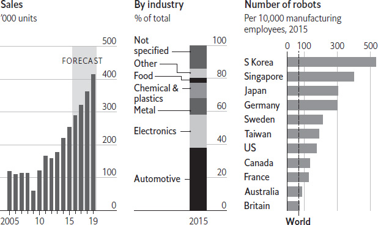
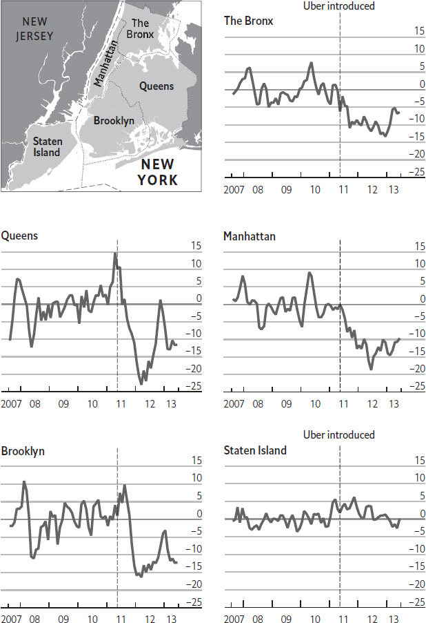
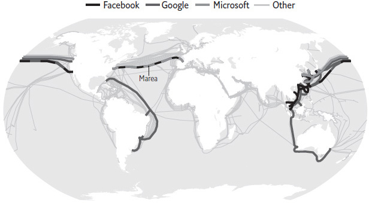

The first computers were large machines that filled entire rooms. As they became cheaper and smaller, they moved out of basements and laboratories and closer to human beings: first to desks and laps, and eventually into pockets and on wrists. So far they have stopped – mostly – at the surface of the human body. But some computers are starting to enter the brain cavity. How would so-called “brain computers” work?
“Brain computer” is a catch-all term for a range of technologies. Definitions diverge depending on where the computer is located, and its level of processing power. Today’s brain computers are relatively simple devices that exist for medical purposes and rely on crude connections to the brain. They are almost always low-power devices worn on the outside of the body, which deliver blunt signals through the skin to relevant regions of the brain. Hundreds of thousands of people already use these machines to bypass conventional input/output systems – such as fingers and voice or eyes and ears – in favour of direct communication with the brain. They are mostly used to make up for a damaged bodily function, such as hearing loss.
The simplest type of brain computer is a cochlear implant. These devices transform sound waves into electrical signals, to stimulate the auditory nerve directly. The computer controlling this process sits behind the ear, connected to a microphone and a wearable battery pack. It transmits both power and soundwaves – transformed into electromagnetic signals – to an implant just inside the skull, next to the ear. That implant receives the signal wirelessly, translates it into an electrical current and passes it down a wire, past the biological machinery of the ear, to an electrode embedded in the auditory nerve. Another sort of brain computer is called a neurostimulator, a device used in the treatment of Parkinson’s disease. It is usually implanted under the skin on the chest or lower back. It sends electrical signals to parts of the brain called the basal ganglia, which are associated with control of voluntary movement.
Now a new kind of brain computer is emerging from Silicon Valley – albeit one that is, for now, still on the drawing board. Entrepreneurs think that devices could go beyond simply replacing lost functions: they dream of connecting the brain directly to computers and to the internet to give it entirely new functions that are beyond human beings’ abilities today. Imagine Google searches that deliver their result to the brain before the question is consciously asked; or direct, brain-to-brain communication, in which messages are sent using thought alone. Elon Musk, with his new company Neuralink, and Bryan Johnson, with a slightly older company called Kernel, are leading the charge. For the time being, the function of the brain is not understood in enough detail to read and write information at this level of linguistic communication. But for the optimists of Silicon Valley, avid readers of science-fiction novels in which such devices are commonplace, it is only a matter of time.
In 2017 the video-gaming industry racked up sales of about $110bn, making it one of the world’s largest entertainment industries. The games on offer run the gamut from time-wasting smartphone apps to detailed, immersive fantasy worlds in which players can get lost for days or weeks. Indeed, the engrossing nature of games may be cause for concern. In 2016 four economists published a paper suggesting that high-quality video games – an example of what they call “leisure luxuries” – are contributing to a decline in work among young people in America, and especially young men. Given the social and economic importance of early adulthood, such a trend could spell big trouble. But are video games really causing the young to turn on and drop out?
In making the link between gaming and work, the economists Mark Aguiar, Mark Bils, Kerwin Charles and Erik Hurst point to compelling data. Between 2000 and 2015, the employment rate for men in their 20s without a college education dropped by ten percentage points, from 82% to 72%. Such men often live at their parents’ homes and tend not to marry at the same rate as their peers. They, do, however, play video games. For each hour less the group spent in work, time spent at leisure activities rose by about an hour, and 75% of the increased leisure time was accounted for by gaming. Over the same period games became far more graphically and narratively complex, more social and, relative to other luxury items, more affordable. It would not be surprising if the satisfaction provided by such games kept some people from pursuing careers as aggressively as they otherwise might (or at all).
To draw a firm conclusion, however, would take a clearer understanding of the direction of causation. While games have improved since the turn of the century, labour-market options for young people have got worse. Hourly wages, adjusted for inflation, have stagnated for young college graduates since the 1990s, while pay for new high-school graduates has declined. The share of young high-school and college graduates not in work or education has risen; in 2014 about 11% of college graduates were apparently idle, compared with 9% in 2004 and 8% in 1994. The share of recent college graduates working in jobs which did not require a college degree rose from just over 30% in the early 2000s to nearly 45% a decade later. And the financial crisis and recession fell harder on young people than on the population as a whole. For people unable to find demanding, full-time work (or any work at all) gaming is often a way to spend some of one’s unwanted downtime, rather than a disincentive to work; it is much more a symptom of other economic ills than a cause.
Games will go on getting better, and the share of jobless or underemployed young Americans choosing to game rather than focus on their careers will probably grow. That is not necessarily something to lament. Games are often rewarding and social, and spending time gaming indoors may provide an alternative to getting involved in undesirable or antisocial activities. If the pull of work is not strong enough to overcome the desire to game, the first response should be to ask whether more can be done to prepare young people for good jobs – and to make sure that there are some around when those young people enter the workforce.
You have probably never heard of FANUC, the world’s largest maker of industrial robots. But the chances are that you own a product built by one of its 400,000 machines. Established in 1956, the Japanese company supplies robots that build cars for Ford and Tesla, and metal iPhone cases for Apple. The firm distinguishes itself from competitors by the colour of its robots’ whizzing mechanical arms, which are painted bright yellow. Its factories, offices and employee uniforms all share the same hue. FANUC is at the forefront of a booming market for robots that shows little sign of slowing. According to the International Federation of Robotics, unit sales of industrial robots grew by 15% in 2015, while revenues increased 9% to $11bn. In 2016 turnover in North America rose by 14%, to $1.8bn. ABI Research, a consultancy, reckons that the industry’s sales will triple by 2025.
The popular narrative about robots is that they are stealing human workers’ jobs. A paper published by the National Bureau of Economic Research broadly supports this belief, estimating that each additional robot in the American economy reduces employment by 5.6 workers. But the relationship between automation and employment is not always straightforward. One big trend is the growth of “collaborative robots”, smaller and more adaptable machines designed to work alongside humans and increase their productivity. Barclays, a bank, thinks that between 2016 and 2020, sales of these machines will increase more than tenfold. Adopting robots has made it economical for some manufacturers in high-wage countries to “re-shore” production from poorer countries. In 2017 Adidas, a sportswear firm, began producing running shoes in a German factory staffed by robots and 160 new workers.
The life robotic
Global industrial robots

Source: International Federation of Robotics
FANUC is not taking its dominance for granted. The company is working on smarter, more customisable robots and is investing heavily in artificial intelligence. Its efforts to adapt in the rapidly evolving robotics industry can be seen even in the firm’s new approach to colours. When the company unveiled its first collaborative robot, CR-35iA, its trademark yellow had been replaced with green.
“Faster, higher, stronger,” goes the Olympic motto. So it was only appropriate that the fifth generation of wireless technology, “5G” for short, should get its first showcase at the 2018 Winter Olympics in Pyeongchang, South Korea. Once fully developed, 5G is supposed to offer download speeds of at least 20 gigabits per second (4G manages about half that at best) and response times (“latency”) of below 1 millisecond. That means 5G networks will be able to transfer a high-definition movie in two seconds and respond to requests in less than a hundredth of the time it takes to blink an eye. But 5G is not just about faster and broader wireless connections.
The technology could also enable all sorts of new services. One example would be real-time virtual- or augmented-reality streaming. At the Olympics, for example, many contestants were followed by 360-degree video cameras. At special venues sports fans could don virtual-reality goggles to put themselves right into the action. 5G is also supposed to become the connective tissue for the internet of things, interconnecting everything from smartphones and wireless sensors to industrial robots and self-driving cars. This will be made possible by a technique called “network slicing”, which allows operators to create bespoke networks that give each set of devices exactly the kind of connectivity they need to job a particular job.
Despite its versatility, it is not clear how quickly 5G will take off. The biggest brake will be economic. When the GSMA, an industry group, asked 750 telecoms bosses in 2017 about the most salient impediment to delivering 5G, more than half cited the lack of a clear business case. People may always want more bandwidth, but they are not willing to pay much more for it – an attitude that even the lure of the fanciest virtual-reality applications may not change. And building 5G networks will not be cheap. Because they operate at higher radio frequencies, 5G networks will require more antennae, base stations and fibre-optic cables.
Although it can deliver data more quickly, 5G technology will arrive slowly. Analysts expect network operators to roll out 5G more gradually than the previous wireless generation – and only in places where the numbers add up. Some will initially use the technology to provide super-fast “fixed” wireless links between stationary antennae, which is less tricky to do. Others may use 5G to get more out of the spectrum they already own. Yet others will focus on building 5G networks to serve densely populated cities. In other words, 5G’s trajectory is likely to resemble that of 3G, which was launched in the early 2000s. It disappointed until it found its “killer application” with the smartphone, later that decade. And it was only with 4G that mobile networks actually lived up to the promises of 3G, such as being able to watch video streams. To really get the benefits that are promised for 5G, people may have to wait for 6G.
A decade after mobile phones began to spread in Africa, they have become commonplace even in the continent’s poorest countries. In 2016, two-fifths of people in sub-Saharan Africa had mobile phones. Their rapid spread has beaten all sorts of odds. In most African countries, less than half the population has access to electricity. In a third of those countries, less than a quarter does. Yet in much of the continent people with mobile phones outnumber those with electricity, despite the fact that they may have to walk for miles to get a signal or to recharge their phones’ batteries.
A current problem
Sources: IEA; GSMA
Mobile phones have transformed the lives of hundreds of millions for whom they were the first, and often the only, way to connect with the outside world. They have made it possible for poor countries to leapfrog much more than landline telephony. Mobile-money services, which enable people to send cash straight from their phones, have in effect created personal bank accounts that people can carry in their pockets. By one estimate, the M-Pesa mobile-money system alone lifted about 2% of Kenyan households out of poverty between 2008 and 2014. Technology cannot solve all of Africa’s problems, but it can help with some of them.
When will you be able to buy a driverless car that will work anywhere? This commonly asked question contains three assumptions: that autonomous vehicles (AVs) will resemble cars; that people will buy them; and that they will be capable of working on all roads in all conditions. All three of those assumptions may be wrong. Although today’s experimental vehicles are modified versions of ordinary cars, with steering wheels that eerily turn by themselves, future AVs will have no steering wheel or pedals and will come in all sorts of shapes and sizes; pods capable of carrying six or eight people may prove to be the most efficient design. Rather than working everywhere, these pods will initially operate within geographically limited and well-mapped urban areas. And they will be shared “robotaxis”, summoned when needed using a ride-hailing app. The first self-driving vehicle you ride in will be shared, not owned, for a combination of technological and economic reasons.
The technology needed to get vehicles to drive themselves has not yet been perfected, but it has improved enormously over the past decade and is on the verge of working reliably, at least in relatively simple urban environments with good weather. This explains why Phoenix, Arizona, is a popular place to test AVs; Waymo, the self-driving car unit of Google’s parent company, hopes to launch a robotaxi service there by the end of 2018, based on Chrysler Pacifica minivans. Other robotaxi services will appear in the coming years in other cities, and the areas they cover will gradually be expanded. The initial deployment of self-driving vehicles as robotaxis makes sense because they only need to work within a particular area – and because the sensors needed for a fully autonomous AV to sense its surroundings and figure out how to respond currently cost more than the vehicle itself. That is less of a problem for a shared robotaxi, however, which will be in use and generating revenue for several hours a day. (Private cars, by contrast, are used on average only about 5% of the time.)
So economics and practicality dictate that AVs will start out as shared robotaxis. Eventually, perhaps by 2030 or so, the cost of sensors will fall and it will no longer be prohibitively expensive to buy your own self-driving vehicle. The question then is whether you would want to. For people living in cities, robotaxis could offer a far cheaper and more convenient alternative to car ownership. At the moment, travelling by Uber or another ride-hailing service costs around $2.50 a mile; but take away the driver, and that cost could fall to $0.70 a mile, reckon analysts at UBS, a bank. That is less than the $1.20 a mile it costs, on average, to run a private car (when fuel, insurance, servicing and other costs are factored in). So if robotaxis really work as advertised, many urbanites could ditch their cars and save thousands of dollars a year. UBS predicts that by 2035, 80% of people will use robotaxis in cities where they are available, and that urban car ownership will fall by 70%.
No doubt some people will still want to own a car, and will buy a self-driving one. But the total number of vehicles on the road will fall by about half from its current level, UBS predicts, and by 2050 those vehicles will be split roughly equally between robotaxis and privately owned AVs. The robotaxis, being in almost constant use, will account for the vast majority of miles travelled. With fewer private vehicles needing to be parked, vast swathes of land currently wasted on parking will be available for other uses, such as housing. As cars did in the 20th century, AVs will redefine retailing and reshape cities, as well as providing a convenient new form of mobility. As with cars, which lead to road deaths, pollution and congestion, there are likely to be unanticipated (and unpleasant) consequences for society from autonomous vehicles, such as a loss of privacy and the potential to use them as a means of social control. Removing the horse from horse-drawn carriages was an apparently simple change that had far-reaching effects. Similarly, there is much more to autonomous vehicles than simply removing the need for a driver – and much of their impact will be a consequence of the fact that they will mostly be shared, not owned.
Gun violence in America gets plenty of attention, but cars kill more people. Around 40,000 people a year die on American roads, more than all fatalities caused by firearms (of which two-thirds are suicides, not homicides). The death rate from motor accidents in America, around 12 people per 100,000, is more than twice that of western Europe. The grim toll of motor-vehicle deaths is widely seen as unavoidable, given that the United States is a large, sprawling country primarily designed around the automobile. But around a third of these deaths has involved drunk drivers, suggesting that there is, in fact, substantial room for improvement. Indeed, it appears that the advent of ride-hailing apps like Uber and Lyft has had a welcome impact on road safety.
According to a working paper by Jessica Lynn Peck of the Graduate Centre at the City University of New York, the arrival of Uber in New York City may have helped reduce alcohol-related traffic accidents by 25–35%, as people opt to hail a ride home after a night out, rather than driving themselves. Uber was first introduced in the city in May 2011, but did not spread through the rest of the state. The study uses this as a natural experiment. To control for factors unrelated to Uber’s launch, such as adverse weather conditions, Ms Peck compares accident rates in each of New York’s five boroughs to those in the counties where Uber was not present, picking those that had the most similar population density and pre-2011 drunk-driving rate.
The four boroughs which were quick to adopt Uber – Manhattan, Brooklyn, Queens and the Bronx – all saw decreases in alcohol-related car crashes relative to their lookalike counties. By contrast, Staten Island, where Uber caught on more slowly, saw no such decrease. It should not take ride-hailing apps to curb drunk driving, but any reduction is worth hailing.
Alcohol-related crashes in New York City
Difference* in the number of crashes in boroughs when compared with similar counties

Source: “New York City Drunk Driving After Uber” by J. L. Peck, 2017
*Three-month moving average
Most people, by now, have heard of virtual reality (VR). Giant technology companies, from Google to Samsung to Sony, are hoping that it will be the next big hit in consumer electronics, though it has failed to break out of a specialist niche. Its close cousin, augmented reality (AR), is less well known. Yet many people think that AR, when it comes, could have a much bigger impact than VR ever will. What exactly is it?
The first thing to realise is that “reality” means two almost entirely different things depending on which technology you are talking about. VR aims to generate an immersive artificial reality: a convincing computer simulation of the world for its users to explore. AR, on the other hand, sticks with “real” reality, and uses computers to layer useful or interesting information on top of it. That is not a new idea. AR’s early ancestors include the heads-up displays that were fitted to jet fighters starting in the 1950s, projecting information about airspeed, heading and the like directly onto the cockpit glass. Many people with smartphones will have had experience of more advanced versions. Snapchat, a messaging app, is famous for its ability to doctor photos of faces to give people rabbit ears, baseball caps, improbable moustaches and so on. Pokemon Go, a popular smartphone game, uses AR to superimpose virtual creatures onto the real world. Users of Google’s Translate app can point their phones at street signs and menus written in foreign languages, and see the text magically translated into their native tongue.
But AR’s proponents want to go much further than that. Their goal is to develop “smart glasses” that can project three-dimensional images in the user’s field of vision that appear to blend perfectly into the real world. For now, the firm that has made the most progress is Microsoft. Its HoloLens headset is a self-contained computer that uses a suite of sensors to build a 3D model of the world around it. It can then do everything from placing a set of virtual “Minecraft” blocks onto a kitchen table to generating virtual cadavers for anatomy students to study. Other companies are interested, too. Magic Leap, a startup based in Florida, has attracted $2.3bn in investment to develop a similar technology. Facebook, which bought Oculus, a VR company, for $2bn in 2014, says its ultimate goal is to produce a set of glasses that can do both VR and AR at the same time.
For now, that is a long way off. The HoloLens is impressive, but it is just an early incarnation of the technology, which can be expected to improve rapidly in the coming years, just as the brick-like mobile phones of the 1980s evolved into modern smartphones. And for AR to take off as a consumer technology, inventors will need to solve more than just technical problems. Social factors matter, too. What is the right etiquette if you are talking to someone and a text message pops into your field of vision? Will wearing smart glasses at the dining table, or in a meeting, be considered impolite? Most technology analysts think AR will make its first inroads in the workplace, where social mores are less important. Smart glasses can help a technician identify a component that needs to be replaced, for example, or give a surgeon the illusion of being able to see inside a patient during an operation. VR lets you escape into a different reality. But because AR is used in the real world, it could have many more benefits – and is also likely to have unexpected social consequences.
For decades, engineers and science-fiction writers have dreamed of lifts capable of carrying things into orbit from the Earth’s surface. Konstantin Tsiolkovsky, a Russian scientist, suggested the idea in 1895, inspired by the Eiffel Tower. And in 1979 Arthur C. Clarke wrote an entire novel, The Fountains of Paradise, about the construction of such a space elevator. Thanks to SpaceX and other private spaceflight companies, rocket launches have fallen in price in recent years. Each launch of the Falcon Heavy, the most powerful rocket in operation today, costs around $90m. But whisking satellites, space probes and even people into orbit on a giant elevator might be cheaper, more reliable and more civilised than using giant fireworks – if one could be built. Unfortunately, the technical challenges are formidable.
The basic idea of a space elevator is to run a fixed cable from a point on the Earth’s equator to a space station directly overhead, in geostationary orbit (that is, at an altitude of 36,000km). Objects at that altitude circle the planet once a day, so they have the useful characteristic of appearing to hover over a fixed spot on the Earth’s surface. Cargo-carrying vehicles can then be run up and down the cable. They need to be powered on the way up, but can reclaim energy as gravity helps them on the way down. These vehicles would have to be quite large to carry people: even if they moved at 500kph, the trip in each direction would take three days. And building a 36,000km-long high-speed railway on Earth would be hard enough. Building a vertical one into space would be much more difficult.
The chief obstacle is that no known material has the necessary combination of lightness and strength needed for the cable, which has to be able to support its own weight. Carbon nanotubes are often touted as a possibility, but they have only about a tenth of the necessary strength-to-weight ratio and cannot be made into filaments more than a few centimetres long, let alone thousands of kilometres. Diamond nanothreads, another exotic form of carbon, might be stronger, but their properties are still poorly understood. Even if a suitable material could be found, the part of the cable within the atmosphere would be subject to weather disturbances, and the vehicles running up and down it could also cause dangerous oscillations. Anchoring it to a moveable, seagoing platform might help, but keeping the cable steady would still be a tall order. A further worry is collisions: there are thousands of satellites and other items in orbit around the Earth, from an altitude of around 2,000km upwards. Any impact with the cable could cause disaster.
True believers in space elevators continue to look for ways around these problems, but they may be insurmountable. The idea refuses to die, however, possibly because of its elegance and simplicity. Perhaps the dream will be realised, just not on Earth. Building a space elevator between the moon’s surface and lunar orbit (to transport things such as visiting tourists or material mined on the moon) would be far easier, because of the weaker gravity and lack of atmosphere. Anyone hoping to take a space elevator into orbit from Earth, however, faces a long wait.
On October 19th 2017 Rob Weryk of the University of Hawaii saw something rather strange. In pictures produced by Pan-STARRS 1, a telescope on Haleakala, he identified an unusually fast-moving, faint object that he concluded could not have originated in Earth’s solar system. It was travelling at more than 25km per second. That is too fast for it to have a closed, elliptical orbit around the Sun. Nor could its velocity have been the result of the extra gravitational kick provided by an encounter with a planet, since the object arrived from well above the ecliptic plane near which all the Sun’s planets orbit. Indeed, after swinging around the Sun, it passed about 25m km below Earth, before speeding back above the ecliptic plane. Observations from other telescopes confirmed that Dr Weryk’s object was the first extrasolar object to be spied by astronomers within our own solar system.
The object was originally classified as a comet and thus named C/2017 U1 (the “C” stands for comet). But it lacked the tail of gas and dust produced when such icy rocks fly close to the Sun. Furthermore, an analysis of the sunlight it reflected suggested that its surface was reddish, and was mostly rock. So it was first reclassified as an asteroid, A/2017 U1. Then, once its interstellar origin had been confirmed, it was renamed 1I/2017 U1. It was also given a proper name: ‘Oumuamua, from a Hawaiian word meaning “scout”. Measurements of its brightness suggest that it is a cigar-shaped object, about 230 metres long and 35 metres wide, tumbling end over end. Its rocky nature is puzzling. Comets are formed on the cold periphery of distant solar systems. Asteroids reside within such systems’ interiors, where any comet-like volatiles will have been driven off by the heat of their parent stars. Models of planet formation suggest that interstellar objects are more likely to be comets, as they can be more easily dislodged from their orbits than asteroids.
One possible explanation is that over many millennia, as 1I/2017 U1 travelled between the stars, cosmic rays might have transformed the icy, volatile chemicals that would be expected to stream off a comet into more stable compounds. Another is that the Sun is not the first star 1I/2017 U1 has chanced upon, and its volatile materials have been boiled off by previous stellar encounters. Or it could indeed be that the object was rocky to begin with – perhaps once orbiting its parent star in an equivalent of our solar system’s asteroid belt, before its ejection by an encounter with a Jupiter-like planet.
Why, then, has nothing like 1I/2017 U1 been seen before? Those planet-formation theories suggest such objects should be a reasonably common sight. Perhaps the theories are wrong. Or perhaps these interstellar visitors have been overlooked in the past, and 1I/2017 U1 will now inspire a spate of such sightings in future. Sadly for astronomers, it may not be visible long enough for these questions to be resolved decisively. It is now charging out of the solar system towards the constellation of Pegasus – at 44km per second. Small uncertainties in the calculation of its trajectory may mean that where exactly it came from and where it is heading will remain a mystery. But of its interstellar origin there is no doubt.
The “Miracle on the Hudson” – the successful ditching of a US Airways jetliner into New York’s Hudson River in 2009 after it hit a flock of geese – taught frequent flyers two things. First, it really is possible to land an aircraft on water, just as is shown on seat-back safety cards (at least for a small, narrow-body jet). Second, and more worryingly, the incident showed how dangerous birds can be to aircraft, particularly when they get sucked into engines. Aircraft engines are supposed to be designed to withstand an impact by the feathered creatures. Using big guns, chickens have been fired at aircraft engines in safety tests since the 1950s. More recently, that has prompted another question. If birds can be so dangerous, what about drones?
New research suggests that small unmanned aerial vehicles (UAVs) might actually do more damage than birds at the same impact speed, even if they are a similar weight. The study, published by the Alliance for System Safety of Unmanned Aerial Systems in conjunction with Research Excellence, a think-tank, used computer simulations to examine the impact of bird and drone collisions with planes in more than 180 scenarios. The researchers found that the drones’ rigid and dense materials – such as metal, plastic and lithium batteries – can put planes at much greater risk than the relatively squishy body of a bird. Kiran D’Souza, one of the authors, says that in every collision scenario with a drone there was at least minor damage to the plane – and sometimes it was much more severe. In one case, the researchers discovered that if a drone were to hit an aircraft engine’s fan blades when it is operating at its highest speed, the blades could shatter, causing the engine to fail.
These findings paint a grim picture, given that in the past two years the number of drone sightings by pilots has surged. According to the Federal Aviation Administration (FAA), there are around 100 cases each month of drones potentially endangering an aircraft, and two collisions have already happened in North America. In September 2017 a drone collided with a helicopter near Staten Island in New York, and the following month an aircraft was struck by a drone in Québec City. Both aircraft landed safely, but given the regulations in place, neither UAV should have been flying in the first place. In America drones are required to stay in sight of their pilot, which was not the case with the helicopter collision. They also must fly at or below 400 feet and yield to manned aircraft. In Canada UAVs are not allowed to operate above 300 feet, and airports, helipads and seaplane bases are considered “No Drone Zones”. Europe has also seen at least three aircraft collisions with drones since 2010, and has been conducting research to examine the dangers.
With so many drone-owners flouting the rules, some experts think that it is just luck that a serious collision has not yet happened. America’s FAA says it is working to create new regulations to reduce the risks drones pose to planes. New safety standards for engines may be needed to make them more resistant to impacts with the flying contraptions. In addition, existing regulations on where drones can and cannot fly should be more strictly policed. The FAA is also looking to UAV-makers and users to develop detect-and-avoid technology to prevent collisions with each other, and with manned aircraft. Given the millions of travellers who take to the sky each day, efforts to keep them safe will surely have to come from both sides.
According to internet folklore, the very first spam e-mail was sent in 1978, to around 400 recipients. The sender was given a ticking-off, and told not to do it again. Alas for that golden age. These days, a torrent of e-mails littered with misspellings promising to cure wrinkles, enlarge penises, banish fat or wire millions in unclaimed offshore wealth is the fate of almost everyone with an e-mail address. Other e-mails aim to harvest usernames and passwords, or contain deceptive links to malicious software designed to take over a user’s computer. According to one estimate from SecureList, a cyber-security firm, roughly 60% of all e-mail is spam. But why? What is the point of the avalanche of spam?
In a word, money. Spam is the digital cousin of ordinary, paper-based junk mail. Firms send this out because they think it will drum up business. By reducing the cost of communication, the internet turbocharges that business model. Real-world junk mail might be profitable if only one recipient in a thousand decides she needs double-glazed windows or a greasy pizza. But sending an e-mail is far cheaper than sending a piece of paper. With a list of address and the right software, thousands of messages can be sent every hour. And because internet users do not pay by the message, the marginal cost per message is essentially zero. All this means that even if only one recipient in a million is conned into buying some dubious pills or clicking a link that reveals their credit-card details, the revenues far outweigh the costs.
The relative anonymity offered by the internet also enables spammers to hide their identities, which allows more obviously criminal uses of e-mail. Phishing e-mails, which try to persuade users to enter sensitive details such as banking passwords into fake (but convincing-looking) websites, can be very profitable, because the data they harvest can allow their controllers to loot bank accounts or go on buying sprees with stolen credit-card information. Malicious attachments can subvert a user’s machine, perhaps recruiting it into a “botnet”, a horde of compromised machines that can be rented out to attackers to knock websites offline. And then there is “ransomware”, in which a malicious program encrypts all the files on the victim’s computer, then displays instructions demanding payment to unscramble them. All this is made possible by giant lists of e-mail addresses that are bought, sold and swapped between spammers. Those, in turn, are generated from leaks, hacks, guesswork and addresses collected from users of shady websites and subsequently sold on.
Busts are not unheard of (a big Nigerian spammer, believed to be behind thousands of online scams earning more than $60m, was arrested in August 2016). But they are not common enough to put a meaningful dent in the business. Instead, computer firms such as Microsoft and Google have become locked in an arms race with the spammers. Spam filters began appearing in the 1990s, as the internet gained mainstream popularity. Spammers altered their tactics to work around them (which is why spam is full of deliberate misspellings such as “v1agr*”). For now, tech firms have the advantage: artificial-intelligence filters can be trained to recognise the characteristics of spam messages, and reroute them to spam folders. Training those filters requires them to have plenty of recent examples to practise on. With spam, at least, that is not a problem.
Grainy footage of police officers shooting members of the public has become unhappily familiar in recent years. Smartphones, which have proliferated, enable anyone to record police actions. The footage of the death of Keith Lamont Scott, which prompted violent protests in North Carolina in September 2016, was striking for another reason – it came from the police. It is increasingly common for police officers to sport a camera on their uniforms. A growing body of evidence suggests that the gadgets improve the behaviour both of cops and those they deal with.
A study published in 2016 by researchers at the University of Cambridge and RAND Europe, a think-tank, suggested that body cameras can slash the number of complaints made about the police. Over the course of a year, around 2,000 officers in two forces in America and four in Britain were randomly assigned cameras according to their shift. Compared with the previous year, the number of complaints brought against them dropped by 93%. The number of complaints also fell when officers were not wearing cameras during the trial, an effect the authors call “contagious accountability”. According to Barak Ariel, one of the researchers on the Cambridge study, officers who wore cameras but only started recording in the middle of their interactions with the public were more likely to use force than those not using them. So for the best results, police officers should have little or no discretion in when to turn the cameras on or off.
Civil-liberty campaigners welcome the chance to keep an eye on the police. Many police forces are enthusiastic too. Dealing with complaints is expensive. Cameras also improve the behaviour of members of the public and reduce the number of bogus complaints brought against the police. They are an efficient way to collect evidence. They can be used in training; officers can learn from their colleagues’ actions. Mr Ariel reckons British cops are more open to the devices than their American counterparts. Police unions in Boston and Cincinnati say they should not be rolled out until their contracts are changed to reflect the new work that cameras will demand.
Yet the use of cameras brings new challenges. If police record every interaction with the public, they will have to find a way to store the many hours of footage generated. Questions will then arise as to how long such data should be kept and in what circumstances recordings should be released to the public. Such worries are not insignificant. But the evidence is mounting that the usefulness of such cameras outweighs the drawbacks.
In September 2017 Microsoft and Facebook announced the completion of a 6,600km (4,100-mile) cable stretching from Virginia Beach, Virginia, to Bilbao, Spain. Dubbed Marea, Spanish for “tide”, the bundle of eight fibre-optic threads, roughly the size of a garden hose, is the highest-capacity connection across the Atlantic Ocean. It is capable of transferring 160 terabits of data every second, the equivalent of more than 5,000 high-resolution movies.
Such ultra-fast fibre networks are needed to keep up with the torrent of data flowing around the world. In 2016 international bandwidth usage reached 3,544 terabits per second, roughly double the figure in 2014. Firms such as Google, Facebook and Microsoft used to lease all their international bandwidth from carriers such as BT or AT&T. Now they need so much network capacity to synchronise data across their networks of data centres around the world that it makes more sense to lay their own dedicated cables.
This has led to a boom in new undersea cable systems. The Submarine Telecoms Forum, an industry body, reckons that 100,000km of submarine cable was laid in 2016, up from just 16,000km in 2015. TeleGeography, a market-research firm, reckons that $9.2bn will have been spent on such cable projects between 2016 and 2018, five times as much as in the previous three years.
Plumbing the depths
Active and planned submarine cable systems owned* by: October 2017

Source: TeleGeography
*In full or in part